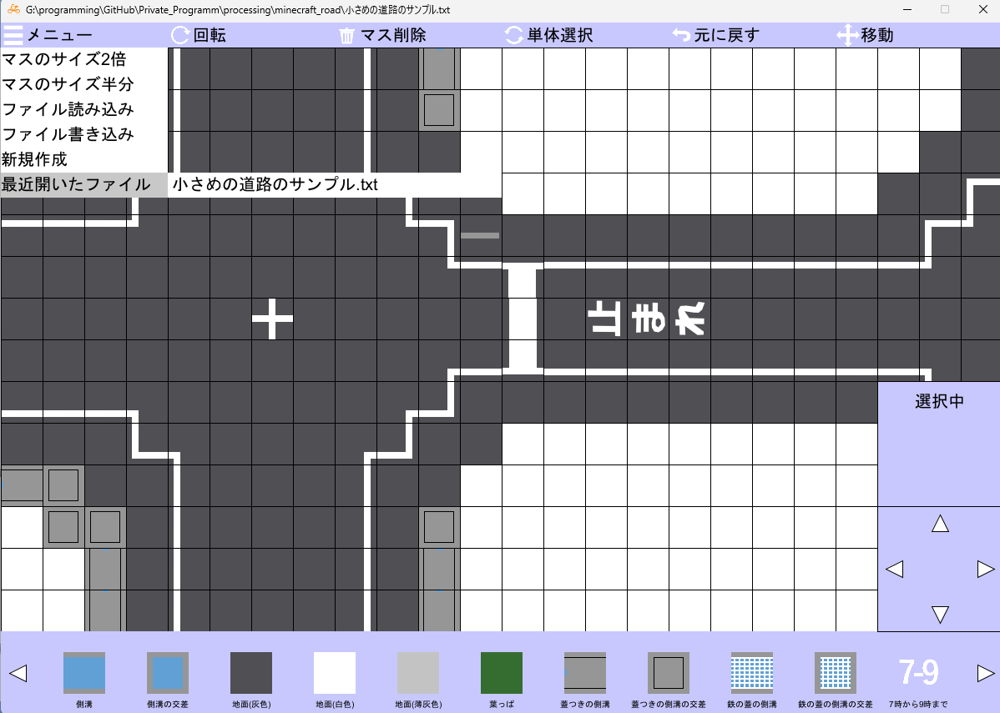
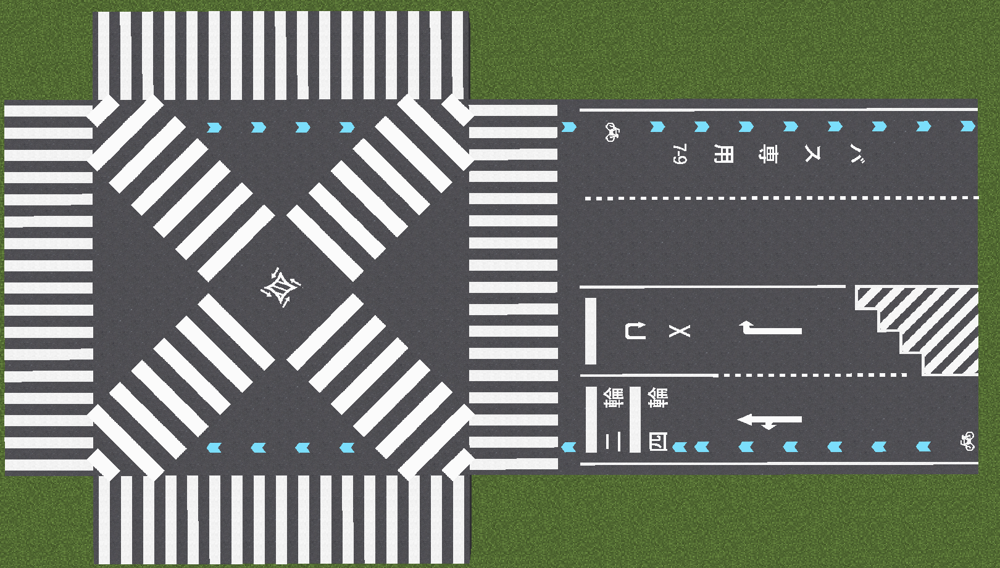

Minecraft道路設計ツール
作品紹介
MinecraftのMOD「Asphalt Mod」を使う際に、設計図を書くためのツールです。

工夫点・技術的特徴
足りない要素を追加するための拡張パックも用意し、その内容に対応したタイルも入れています。

作品リンク
GitHubソースダウンロードページ
MinecraftのMOD「Asphalt Mod」を使う際に、設計図を書くためのツールです。

足りない要素を追加するための拡張パックも用意し、その内容に対応したタイルも入れています。
